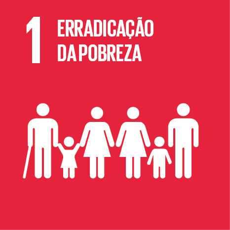
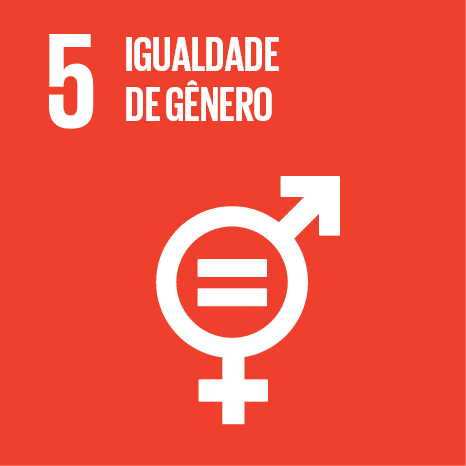
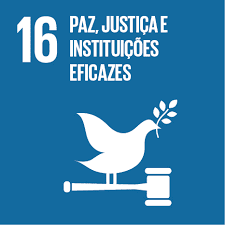

A ABCJ
QUEM SOMOS
Somos a Associação Beneficente e Cultural de Jundiaí. Atuamos na região de Jundiaí-SP, desenvolvendo atividades educativas, sociais e culturais voltadas à população de baixa renda, buscando auxiliar principalmente na formação do jovem.
NOSSA MISSÃO
Proporcionar às famílias, principalmente aos jovens, a oportunidade de se integrarem à sociedade e construírem um futuro com mais cultura e conhecimento para si e para sua comunidade.
NOSSA VISÃO
Nós acreditamos em sonhos! E sabemos que só através do esforço pessoal, da dedicação e da oportunidade é possível transformá-los em realidade. Quando se muda uma história individual, esse indivíduo passa a agir como agente multiplicador do bem, peça-chave para a formação de um mundo melhor.
OBJETIVOS
Prática desinteressada da filantropia e da beneficência, voltada para integração de cidadãos na sociedade, possibilitando-os de se autossustentarem, através do desenvolvimento profissional, científico, cultural, artístico e educacional; proteção ao meio-ambiente, utilizando-se, para isso, organização, coordenação, promoção de cursos de formação ou de qualificação profissional, além de campanhas de benemerência, sociais e culturais.
HISTÓRICO
Surgiu na década de 1960, formada por um grupo de amigos, e tinha enfoque nas ações assistencialistas e sociais. Nos anos 2000, ressurgiu com uma proposta revitalizada, mas mantendo os ideais que estruturaram sua criação. Foi legalmente fundada no dia 10 de março de 2006. O atendimento se ampliou, ganhando notoriedade no atendimento aos adolescentes de baixa renda, através do “Projeto Preparando o Futuro”. Passou a ofertar acompanhamento e investimento na formação profissional e pessoal do jovem.
TRANSPARÊNCIA
A ABCJ é uma entidade civil legalmente constituída, sem finalidade lucrativa, de caráter filantrópico, beneficente e cultural. É formada por um grupo de profissionais capacitados e motivados para desenvolver atividades sócios educativas, culturais e sociais junto à população. A entidade pratica um modelo de filantropia que só é possível porque tem como base uma rede de simpatizantes e parcerias com entidades destacadas na área educacional. É reconhecida como entidade de Utilidade Pública Municipal pela Lei n° 7264 de 08/04/2009.
A ABCJ e os Objetivos do Desenvolvimento Sustentável (ODS)
A ABCJ (Associação Beneficente e Cultural de Jundiaí) realiza diversas ações sociais e tendo como principal projeto o Programa Preparando o Futuro. Dentro dessa frente de trabalho são atendidos sete dos 17 Objetivos do Desenvolvimento Sustentável (ODS), conforme estabelecido pela Organização das Nações Unidas (ONU) em 2015.


